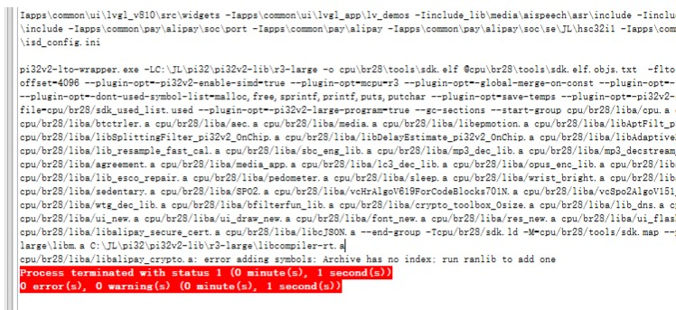
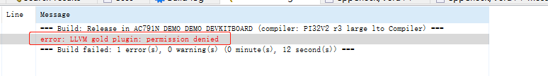
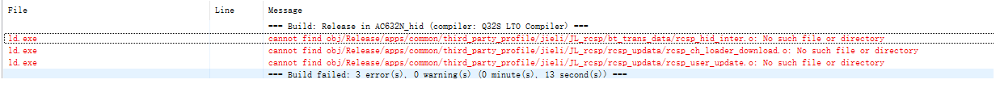
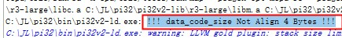

4.1.9. Common Causes of Build Errors
4.1.9.1. Build reports Unknown command line argument, unrecognized option or unknown argument
If Unknown command line argument, unrecognized option or unknown argument is reported during linking or compiling, it means that the compiler or linker does not recognize a command-line argument passed to it. There are generally two possible reasons:
You modified the compiler or linker flags but made a typo or wrote an option incorrectly
Your toolchain is too old and does not support the option yet
Solution:
Update the toolchain to the latest version; see Updating the Jieli Toolchain
Build and link again
4.1.9.2. Build reports undefined reference to
During linking, undefined reference to is reported, as in the figure below:

This error means that a referenced function could not be found. For example, undefined reference to 'wav_decode' in the figure above means that the code references (that is, calls, takes the address of, etc.) the function wav_decode, but no implementation of this function is provided.
There are usually two reasons for this:
No implementation of the function is actually provided. Check whether the function name was mistyped, or whether the library has not been updated and is missing the function.
The function may not be found because of the order in which the linker searches the library files. Consider using
--start-groupand--end-groupto specify how the library files are searched.
4.1.9.3. Build reports relocation truncated to fit
During linking, reloaction truncated to fit is reported, as in the figure below:

This error means that the symbol is too far away from the location that references it for the distance to be represented. This usually has one of the following causes:
The library functions being used were built with the shorter
callinstruction (that is, built without-mllvm -pi32v2-large-program=true). Make sure to switch to the compiler options, linker options and standard libraries of thelargeconfiguration.If the symbol is a function, the function may not have been aligned to two bytes. Note that the start of every function must be aligned to two bytes. To do this, add
.align 2before the function label (in an assembly file), or check whether the ld script places it correctly.The symbol may be undefined.
4.1.9.4. Build reports xxx.a: error adding symbols: Archive has no index: run randlib to add one
During linking, Archive has no index is reported, as in the figure below:

This error means that the xxx.a file has no symbol index. This may be because the symbol index was removed when the .a file was generated, or for some other reason. You can add the index yourself with the following command:
# On Windows
# Open a CMD window and enter the following command to add a symbol index to xxx.a
C:\JL\pi32\bin\llvm-ar.exe s xxx.a
# On Linux, call llvm-ar (ar also works)
# Here, TOOL_DIR is the location of the toolchain on Linux
$TOOL_DIR/common/bin/llvm-ar s xxx.a
4.1.9.5. Build reports error: LLVM gold plugin: permission denied
During linking, the error shown below is reported:

This error occurs because the linker failed when calling LLVMgold.dll in the toolchain directory. There are usually several possible causes:
Files in the toolchain are corrupted. Reinstall the toolchain and try again. For toolchain installation, see Development Environment Installation
Antivirus software or other permission-control software prevents the linker from calling LLVMgold.dll. Try trusting all executables under the
C:\JLdirectory (recursively, including all subdirectories).Other possible causes: try a different computer and see whether that solves the problem.
4.1.9.6. Build reports xxx.a: syntax error
During linking, the error shown below is reported:

This error means that the linker processed the .a file as a linker script. Since the content of the .a file is not a linker script, a syntax error is reported.
This may have one of the following causes:
The linker flags were specified incorrectly, for example, a -T option was added in front of the .a file. The -T option is used to specify a linker script.
The .a file itself may be corrupted and no longer conform to the .a file format.
Note
Sometimes an .a file does not contain any .o files. In this case, the content of the .a file is !<arch>\n. On Windows, if git's auto.crlf option is set to true, git may treat such an .a file as a text file when the repository is cloned and replace the \n in it with \r\n, which makes linking fail.
4.1.9.7. Build reports xxx.a: error adding symbols: File format not recognized
During linking, the error shown below is reported:

This usually has one of the following causes:
When building on Linux or in WSL,
ulimit -n 8096was not run first to increase the number of files that can be opened, so the linker fails when the number of open files reaches the limit. If you encounter this problem on Windows, consider following How to Reduce the Number of .o Files in an .a File to merge the multiple .o files in the .a file into a single .o file. (This problem is usually related to -flto mode combined with an .a file that contains a large number of .o files. Consider removing -flto from the flags used to build that .a file, or merge the .o files as described above.)The
xxx.afile does not use the same instruction set as the current SDK. Check whether it was generated with the Jieli compiler.
4.1.9.8. Build reports clang.exe: error: no input files
During compilation, the error shown below is reported:

This error is usually caused by the compile command exceeding the command-line length limit.
When you encounter these errors, consider the following:
You can solve this problem by shortening the compile command.
For example, pass the include directories to clang through a file argument.
Note: lines in include_dir.txt must not end with a backslash
\.For builds with a Makefile, see the figure below:

For builds with Code::Blocks, see the figure below:


Put the file that stores the include directories in the same directory as the Makefile and the Code::Blocks project, as shown below:

4.1.9.9. Build reports cannot find xxxx.o: No such file or directory
During compilation, the error shown below is reported:

This error may be caused by the path of the Code::Blocks project being too long.
When you encounter this error, consider the following:
Shorten the path of the Code::Blocks project, for example by copying the Code::Blocks project to the root directory of a drive.
4.1.9.10. Custom errors defined in the linker script
Sometimes checks are added to the linker script, for example statements such as ASSERT(exp, message). When exp is false, the linker outputs message. Generally, these checks verify the following:
That the size of the code, data, etc. is within the range supported by the chip and does not overflow (exceed the physical limit)
That the alignment (of the start address or the size) of the code, data, etc. meets the requirements
For example, the following figure:

When you encounter these errors, consider the following:
Search the entire current code directory for the error string to find the corresponding linker script (usually
sdk.ld.c)Determine which condition is not met and make the corresponding changes